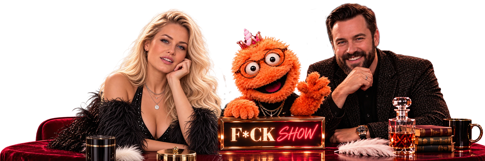
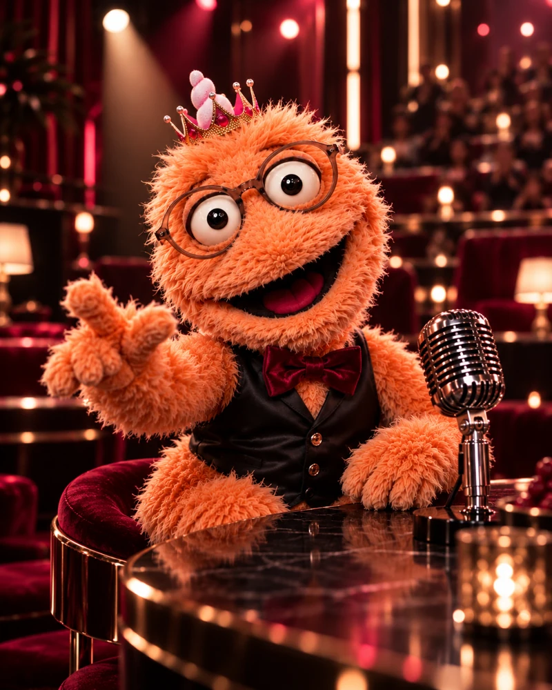
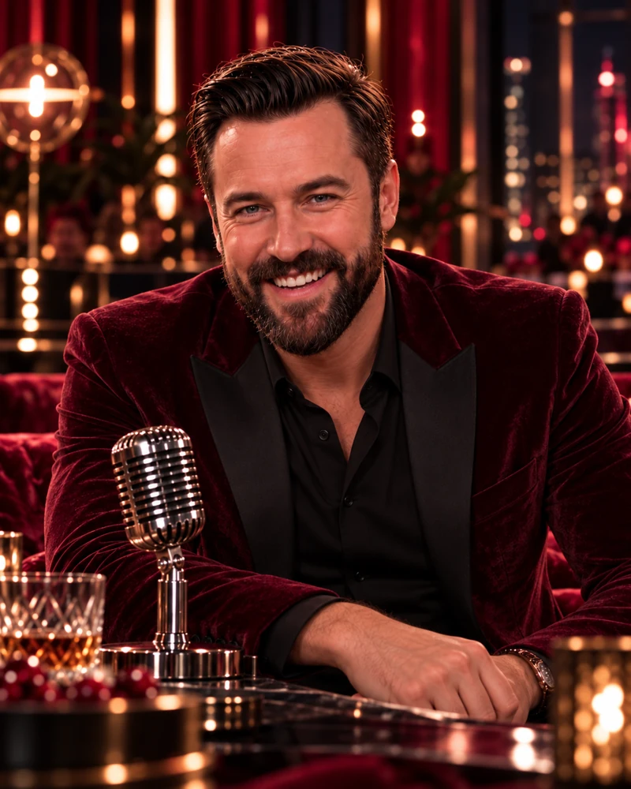

Випуск завершено
Питання, які всі хочуть знати
Випуск 1
Знайомство. Без фільтрів
Ро́ман, Віта і Фростер — хто вони і чому це буде гаряче?
Відео не завантажилося. Відкрити випуск окремо ↗
ВІТА · ФРОСТЕР · РО́МАН
Більше ніж ток-шоу
Гумор. Правда. Емоції. Люди.
Без фільтрів.

РОЗМОВИ БЕЗ ФІЛЬТРІВ
Випуск завершено
Питання, які всі хочуть знати
Випуск 1
Ро́ман, Віта і Фростер — хто вони і чому це буде гаряче?
Відео не завантажилося. Відкрити випуск окремо ↗
Випуск завершено
Формула Віти
Випуск 2
Відверті відповіді, несподівані теми і трошки хаосу.
Відео не завантажилося. Відкрити випуск окремо ↗
Випуск завершено
До всіх випусківВипуск 3
Еліксири, експерименти, пір’їна і великі одкровення.
Відео не завантажилося. Відкрити випуск окремо ↗
ПРО ШОУ / БЕЗ ФІЛЬТРІВ
Але за столом —
Віта, Роман і Фростер.
Віта має власну версію подій. Ро́ман ставить питання, після яких хочеться зробити ковток. Фростер уголос каже те, що інші збиралися вирізати на монтажі.
Тут фліртують, сперечаються, сміються й іноді випадково говорять правду.
ТРИ ГЕРОЇ. ОДИН СТІЛ.
Знайомся. Тепер ти знаєш, кого звинувачувати.
01 / ВЛАСНА ВЕРСІЯ ПОДІЙ
Має відповідь.
Але спочатку змінить питання.

02 / НЕ ПІДЛЯГАЄ МОНТАЖУ
Причина, чому нормального
інтерв’ю не буде.

03 / ПИТАННЯ ІЗ НАСЛІДКАМИ
Хотів провести
нормальне інтерв’ю.
F*CK SHOW